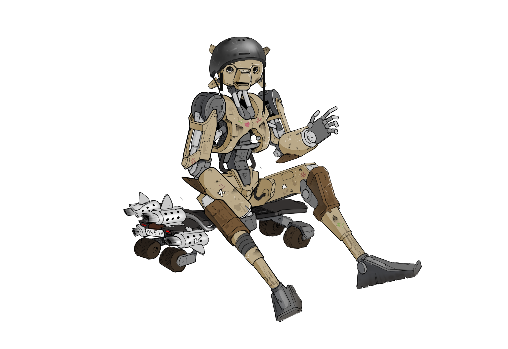

What is FreeSK8?
The FreeSK8 System is an Open Source, comprehensive eboarding & PEV system that consists of multiple devices that are designed to communicate with each other to provide critical system sensor, fault data, and performance metrics to the rider & other system components.
For too long, we’ve made do with mashed together, dumb, and unreliable gear in the esk8 and PEV world, and lived with the resulting lack of standards that make the devices we love to ride less reliable and safe then they need to be.
The small team developing FreeSK8 has experience in robotics hardware and software, general EE, and PEV creation, as well as a fierce dedication to the principles of Open Source. We feel this makes us an ideal alliance to build and maintain an open source hardware and software reference platform providing all necessary power, motor control, lighting, navigation, logging and wireless control under one OS umbrella.
(Open reference specs of all included devices will be published under various free and open software licenses such as GPL GNU v3, CC BY-SA 4.0, CERN-OHL-S V2.0, etc.)
The FreeSK8 system is currently comprised of the Robogotchi Datalogger & GPS Module, the FreeSK8 Remote & Wireless Receiver Module (OSRR 1.0), the FreeSK8 netBMS, Power Switch, & LightShow- a light & general purpose IO controller.
In the longer term, it is our goal to expand our hardware offerings into full eBoard Kits with open source reference documentation on each component, and clear and concise instructions on building them properly to offer the performance, reliability and safety we feel should be present.
If this sounds like something you’d like to be a part of, please reach out and say hello. The more people rowing in the right direction, the better.